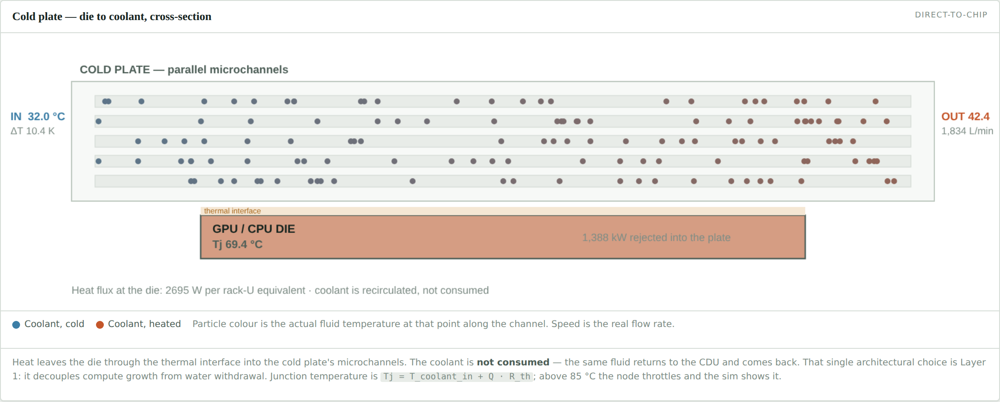
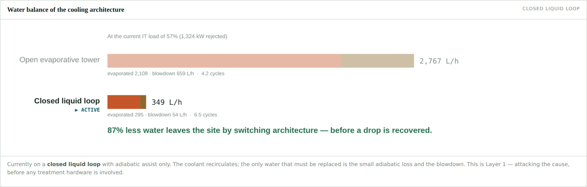
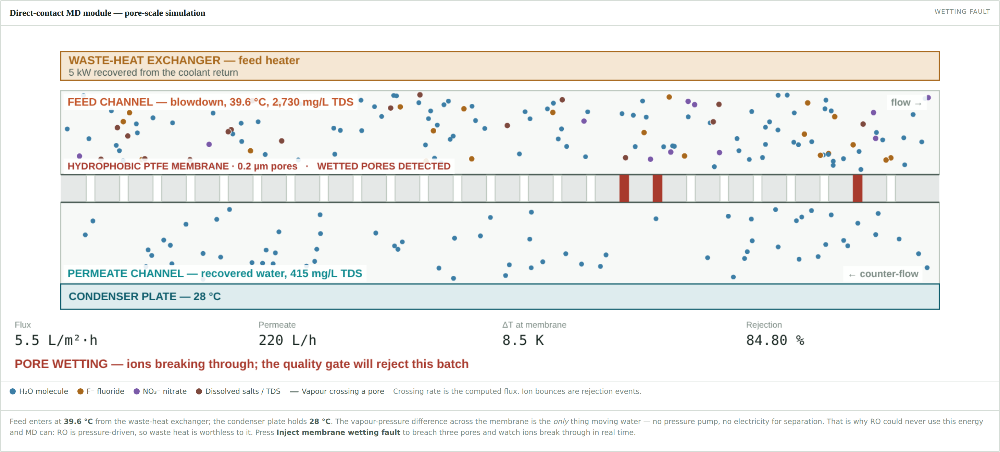
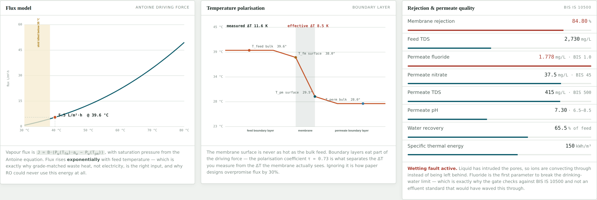
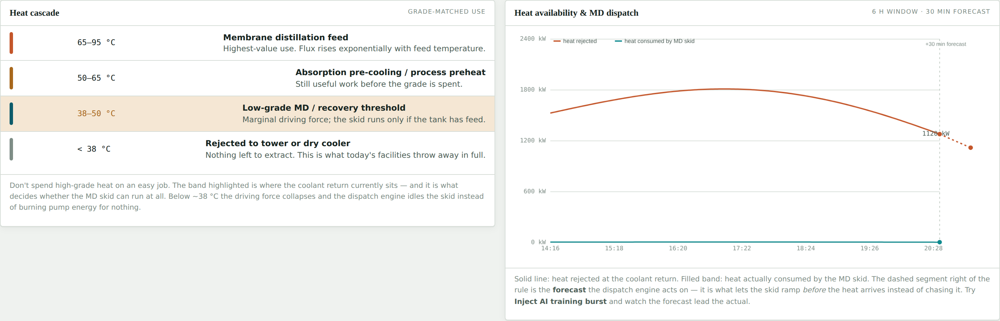

Thermal integration of a hybrid RO–membrane distillation island with a warm-water liquid-cooled data centre, with model-based dispatch and permeate quality verification.
ನೀರುAI — working title of the integrated system
Indian data centres reject heat to atmosphere through evaporative cooling towers while drawing make-up water from aquifers that are, in the case of the Devanahalli block near Bengaluru, already being extracted at 169 % of the sustainable limit. The rejected heat is discarded at 40–55 °C and the concentrated tower blowdown is discharged to drain. This proposal treats both as recoverable streams.
The work develops a thermal design for a hybrid reverse-osmosis / membrane-distillation (RO–MD) recovery island driven by the facility's own cooling-loop return heat, integrated with an elevated-temperature (ASHRAE W4) direct-to-chip liquid cooling architecture. Membrane distillation is selected specifically for the high-salinity RO reject, where osmotic pressure makes further pressure-driven recovery uneconomic but vapour-pressure-driven transport is essentially unaffected.
A first-principles system model has been implemented and validated qualitatively against a real-time simulation console; the proposal now seeks to construct a bench-scale direct-contact MD rig to determine the membrane distillation coefficient B and the ion rejection achieved on synthetic Devanahalli-chemistry blowdown, and to calibrate the polarisation model. Expected outcome: a validated design method sizing an MD island against any facility's measured heat-rejection profile and blowdown chemistry.
Essentially all electrical power delivered to information-technology (IT) equipment in a data centre is converted to heat. For a facility with an IT load of 2.4 MW, the heat that must be removed continuously is approximately 2.30 MW — comparable to the thermal duty of a small process plant, but rejected at a very low temperature and therefore of low thermodynamic value.
Two features distinguish this heat source from conventional industrial waste heat:
Where heat is rejected through an open evaporative cooling tower, the rejection mechanism is predominantly latent. Water is consumed — permanently removed from the local catchment as vapour — and a second, smaller stream (blowdown) must be bled continuously to prevent the dissolved-solids concentration from rising to the point of scaling and corrosion.
The distinction between withdrawal and consumption matters and is frequently blurred in industry reporting. For the design case developed in §6.3, evaporation accounts for 75 % of make-up and is genuinely consumed; blowdown accounts for the remaining 25 % and is, in principle, entirely recoverable.
| Quantity | Significance | Source |
|---|---|---|
| 169 % | Stage of groundwater extraction, Devanahalli block — the design location. Extraction exceeds annual recharge. | CGWB |
| ≈ 300 m | Typical borewell depth in the block; natural recharge penetrates to roughly 60 m. | Field reporting |
| 60.47 % | National stage of extraction; 11.1 % of assessment units classified over-exploited. | CGWB 2024 |
| > 1.5 mg/L | Fluoride concentration in deep hard-rock aquifers of this geology, against the WHO drinking-water limit. | WHO; Springer 2026 |
| 20 → 50 % | Statutory wastewater reuse floor for large water users, 2027–28 rising to 2030–31. | LWM Rules 2024 |
The regulatory trajectory is therefore toward mandated reuse fractions that an evaporative facility cannot meet by improving tower efficiency alone. Recovery of the blowdown stream, and reduction of evaporation through architectural change, are both required.
A liquid-cooled data centre simultaneously rejects 2.3 MW of low-grade heat to atmosphere and discharges approximately 1 m3/h of concentrated, contaminated blowdown to drain, while drawing make-up water from a stressed aquifer. No thermal integration exists between the two streams, although the rejected heat is at a temperature that can drive a thermally-activated separation and the blowdown is precisely the stream such a separation is suited to.
Treating the intake would require a plant sized for the full make-up flow (3.9 m3/h) and would not reduce discharge. Treating the blowdown addresses a stream one quarter the size that is already concentrated — improving separation economics, because the driving force for any concentration-based recovery scales with feed concentration — and simultaneously eliminates a permitted discharge. It also requires no additional groundwater abstraction consent, which materially simplifies deployment.
Reverse osmosis is the default choice for brackish recovery and is retained in this design for the bulk duty. However, RO is pressure-driven: the applied pressure must exceed the osmotic pressure of the concentrate, which rises linearly with concentration. Waste heat is of no use to an RO unit whatsoever.
Membrane distillation (MD) is driven by the partial-pressure difference of water vapour across a hydrophobic microporous membrane. Its driving force depends on temperature and only weakly on concentration, through water activity. The two technologies therefore fail in opposite regimes, which is what makes the hybrid the correct configuration rather than a compromise:
| Stream | TDS mg/L | Osmotic pressure bar | Water activity aw | Practical consequence |
|---|---|---|---|---|
| Tower blowdown | 1 680 | 1.3 | 0.999 | Well within RO capability |
| RO reject | 6 720 | 5.2 | 0.996 | RO recovery limited by LSI / scaling, not pressure |
| MD concentrate | 22 400 | 17.5 | 0.992 | RO would need > 30 bar feed; MD flux penalty is 0.8 % |
The osmotic pressure rises by a factor of 13 across the train; the MD driving force falls by 0.8 %. This is the technical justification for the architecture and the central argument of the proposal.
To develop and experimentally validate a thermal design method for a waste-heat-driven hybrid RO–MD water recovery island integrated with a warm-water liquid-cooled data centre.
| In scope | Explicitly excluded |
|---|---|
| Thermal and mass-transfer design of the recovery island | Detailed structural or seismic design of the skid |
| Heat exchanger sizing and integration with the cooling loop | Data centre IT architecture, server selection, network design |
| Bench-scale determination of B and rejection | Pilot-scale or field trial (proposed as follow-on work) |
| Instrumentation schedule and control philosophy | Full control-system implementation and commissioning |
| Concentrate routing and ZLD interface definition | Design of the crystalliser itself |
| System-level simulation and model calibration | Certification of permeate for potable supply |
| Architecture | Liquid capture | Return temp. | Water consumption | Suitability for heat recovery |
|---|---|---|---|---|
| Air cooling + CRAH, chilled water | 0 % | 12–18 °C | High (evaporative tower) | None — heat is diffuse and below any useful grade |
| Air cooling + evaporative assist | 0 % | 25–35 °C | Very high | Marginal |
| Direct-to-chip, ASHRAE W3 | 70–80 % | 40–45 °C | Moderate | Feasible at low flux |
| Direct-to-chip, ASHRAE W4 selected | 85 % | 50–55 °C | Low (dry cooler feasible) | Good — this proposal's baseline |
| Single-phase immersion | 95–100 % | 45–60 °C | Very low | Best, but retrofit is not practical |
W4 direct-to-chip is selected as the baseline because it achieves a return temperature high enough for thermally-activated separation while remaining a retrofittable architecture — cold plates can replace heatsinks in an existing rack, whereas immersion requires a new hall.
| Configuration | Principle | Typical GOR | Assessment for this duty |
|---|---|---|---|
| DCMD — direct contact | Cold permeate in contact with membrane | < 1 | Simplest; high conduction loss. Used for the bench rig because it isolates B cleanly. |
| AGMD — air gap | Stagnant air gap before condensing surface | 2–4 | Lower conduction loss; internal latent heat recovery. |
| V-MEMD — multi-effect selected | Latent heat of each effect drives the next | 3–6 | Selected for the plant design. GOR 4 assumed, giving 165 kWh/m3. |
| SGMD / VMD | Sweep gas / vacuum on permeate side | varies | Additional blower or vacuum plant; rejected on parasitic power. |
The specific thermal energy of 165 kWh/m3 assumes internal latent-heat recovery at GOR 4. Single-pass DCMD without recovery requires 600–900 kWh/m3 and would demand roughly four times the heat duty. The distinction is material and is carried explicitly through §7.5.
Hydrophobic microporous membranes of PTFE, PVDF or PP are used. The relevant properties are pore size (0.2–0.45 µm), porosity (70–85 %), thickness (50–200 µm), and liquid entry pressure (LEP), which sets the hydraulic margin before liquid intrusion — wetting — destroys selectivity. PTFE is selected for its higher LEP and chemical resistance to the biocides present in cooling-tower blowdown.
A 2018 patent describes waste-heat-driven low-temperature desalination integrated with data centre cooling. It claims a fixed hardware topology on a single steady liquid loop with a seawater feed. It does not address a mixed air/liquid-cooled fleet, an inland blowdown feed, transient heat availability tracking IT load, or a hybrid pressure-driven/thermally-driven train. The present work is distinguished on all four counts, and in particular on the transient thermal integration, which is where the engineering difficulty actually lies.
| No. | Stream | Flow | Temp. °C | TDS mg/L | F− mg/L | Notes |
|---|---|---|---|---|---|---|
| 1 | TCS coolant supply | 2 481 L/min | 40.0 | — | — | PG25, closed loop |
| 2 | TCS coolant return | 2 481 L/min | 52.0 | — | — | ΔT = 12 K |
| 3 | FWS to cooling tower | — | 48 / 38 | 1 680 | 7.2 | 2 304 kW rejected |
| 4 | Evaporation to atmosphere | 2 913 L/h | — | 0 | 0 | Consumptive loss |
| 5 | Tower blowdown | 971 L/h | 35 | 1 680 | 7.2 | CoC = 4 |
| 6 | RO permeate | 728 L/h | 32 | < 60 | < 0.3 | Returned to basin |
| 7 | RO reject → MD feed | 243 L/h | 32 | 6 720 | 28.8 | π = 5.2 bar |
| 8 | Heat slipstream | 3.7 m³/h | 52 → 45 | — | — | 2.5 % of TCS flow, 28 kW |
| 9 | MD permeate | 170 L/h | 31 | < 40 | < 0.2 | Gated against IS 10500 |
| 10 | MD concentrate | 73 L/h | 42 | 22 400 | 96 | To ZLD, π = 17.5 bar |
Taking the IT hall as the control volume, and neglecting the small fraction of electrical energy leaving as radiation and acoustic work:
where fcap is the liquid capture fraction of the cold-plate architecture (Table 4.1). The air-borne balance serves memory, drives and power supplies and is handled by the existing CRAH path.
The die-to-fluid path is modelled as resistances in series. The junction temperature is the sum of the local coolant temperature and the product of device dissipation and total resistance:
Raising the coolant supply temperature raises the MD flux (§7.5) but erodes junction-temperature margin. The margin of 6.5 K is workable but not generous; the sensitivity study in §7.5 quantifies exactly what is bought thermally for each kelvin of margin surrendered. Falling back to W3 (supply 32 °C, return 44 °C) restores 8 K of margin at the cost of roughly 45 % of the MD flux.
Heat rejection in an open tower is predominantly latent. Taking the latent fraction flat and the enthalpy of vaporisation at the operating wet-bulb:
Dissolved solids concentrate in the circulating water. The cycles of concentration relate blowdown to evaporation by a solids balance:
Drift loss is taken at 0.005 % of circulating flow and is neglected in the balance. CoC = 4 is set by the Langelier saturation index of the make-up water; raising it reduces blowdown but increases scaling risk.
A plate heat exchanger transfers the MD duty from a slipstream of the TCS return to the MD feed circuit. Sizing by the log-mean temperature difference:
Verified by the effectiveness–NTU method for a counter-flow arrangement:
which agrees with ε = Q̇ / [ Cmin ( Th,in − Tc,in ) ] = 28.1 / [ 17.7 × 10 ] = 0.70, confirming the sizing.
The rejected heat is a single stream but not a single resource: its usefulness is set by temperature, not quantity. Matching each application to the lowest grade that will serve it — a cascade — maximises the total work extracted before the remainder is rejected.
| Grade | Application | Comment |
|---|---|---|
| 65–95 °C | Membrane distillation at high flux; absorption chilling (double effect) | Not available from W4; would require a heat pump lift or W5 operation |
| 45–65 °C | Membrane distillation feed; single-effect absorption chilling; service hot water | The W4 return sits here. Design point of this proposal. |
| 38–45 °C | Marginal MD; adiabatic pre-cooling of the dry cooler; space heating | Driving force collapses below ≈ 38 °C |
| < 38 °C | Rejection to tower or dry cooler | No further extraction practicable |
The MD duty is only 1.2 % of the rejected heat (Fig. 6.1), so cascading is not required to satisfy it. The cascade is included because it establishes the correct framing for the follow-on question — what else should the remaining 2 276 kW do? — and because it explains why the architecture decision (which sets grade) matters more than the recovery equipment (which sets quantity).
A hydrophobic microporous membrane separates the hot feed from the cold permeate. Surface tension prevents the aqueous phase from entering the pores provided the transmembrane hydraulic pressure remains below the liquid entry pressure. Water evaporates at the feed-side pore mouth, the vapour is transported across the pore, and condenses on the permeate side.
Because transport occurs entirely in the vapour phase, non-volatile species — Na+, Ca2+, Cl−, SO42−, F− and NO3− — are excluded by the phase change itself rather than by size exclusion. This is the property the proposal seeks to quantify experimentally.
Vapour transport through the pore is described by a combined Knudsen–molecular diffusion model. The controlling regime is set by the Knudsen number, Kn = λ / dp; for dp = 0.2 µm and a mean free path of ≈ 0.11 µm at operating conditions, Kn ≈ 0.55, placing the module in the transition regime where both mechanisms contribute. For design purposes the transport is lumped into a single membrane distillation coefficient:
where J is permeate flux (L m−2 h−1), B the membrane distillation coefficient (L m−2 h−1 Pa−1), pw the saturation vapour pressure and aw the water activity of the feed. Determining B for the selected membrane at this grade of heat is Objective 4 of the proposal.
Saturation vapour pressure is evaluated from the Antoine correlation:
Water activity is reduced by the dissolved solids. Even at the MD concentrate condition of 22 400 mg/L, aw ≈ 0.992 — a flux penalty of 0.8 %, against a thirteen-fold rise in osmotic pressure over the same range (Table 2.1). The exponential temperature dependence of pw therefore dominates the design entirely.
Thermal boundary layers form on both sides of the membrane. The temperatures that matter are the membrane surface temperatures, not the bulk values an operator measures. Defining the temperature polarisation coefficient:
A value of τ = 0.75 is assumed for design, consistent with spacer-filled channels at moderate Reynolds number. Neglecting polarisation entirely (τ = 1) would overstate the flux by approximately 30 % — an error that propagates directly into an undersized module.
Required area follows from the target permeate rate and the flux at the design point:
| Tf,in °C | Tfm °C | Tpm °C | Δp kPa | J L m−2 h−1 | Am m2 | Source of heat |
|---|---|---|---|---|---|---|
| 40 | 35.9 | 29.1 | 1.86 | 5.6 | 30.4 | W3 return, marginal |
| 45 | 40.3 | 29.8 | 3.29 | 9.9 | 17.2 | W3 return |
| 48 | 42.9 | 30.1 | 4.30 | 12.9 | 13.2 | Design point — W4 return |
| 52 | 46.4 | 30.6 | 5.87 | 17.6 | 9.6 | W4, smaller HX approach |
| 55 | 49.0 | 31.0 | 7.23 | 21.7 | 7.8 | W5 return |
| 60 | 53.4 | 31.6 | 9.88 | 29.6 | 5.7 | Requires heat pump lift |
The MD concentrate — 73 L/h at approximately 22 400 mg/L — is a smaller but more concentrated stream than the blowdown it originated from. It is routed to a crystalliser for zero liquid discharge, or to licensed industrial reuse. Its design is outside the scope of this project (§3.3), but the interface conditions are specified so that the recovery island can be tendered against a defined concentrate duty. A recovery scheme that does not account for its own residual stream is not a closed design.
| Parameter | Value | Basis |
|---|---|---|
| IT load | 2 400 kW | Design assumption |
| Total heat rejected | 2 304 kW | Eq. (6.1) |
| Liquid-captured heat | 1 958 kW | Eq. (6.2), fcap = 0.85 |
| Coolant supply / return | 40 / 52 °C | ASHRAE W4 |
| Coolant flow rate | 2 481 L/min | Q̇ = ṁ cp ΔT, PG25 |
| Maximum junction temperature | 83.5 °C | Eq. (6.3); 6.5 K margin |
| Tower evaporation | 2 913 L/h | Eq. (6.5) |
| Tower blowdown, CoC = 4 | 971 L/h | Eq. (6.6) |
| RO permeate / reject | 728 / 243 L/h | 75 % recovery |
| MD permeate / concentrate | 170 / 73 L/h | 70 % recovery |
| Overall blowdown recovery | 92.5 % | 898 of 971 L/h |
| MD thermal duty | 28.1 kW | 165 kWh/m3 at GOR 4 |
| Membrane area installed | 15 m2 | Eq. (7.4) + margin |
| Feed heater area | 2.0 m2 | Eq. (6.9) |
| Parasitic electrical load | 1.7 kW | Pumps + dry cooler fan |
| Specific electrical energy | 10.3 kWh/m3 | Of MD permeate |
The recovery island addresses the blowdown; the cooling architecture addresses the evaporation. Because evaporation is three quarters of the make-up demand, the two measures are not alternatives — the architectural change dominates, and recovery closes the remainder.
An MD-only train treating the full blowdown was evaluated as an alternative. At 75 % recovery it yields 728 L/h of permeate, requires 120 kW of heat and 56 m2 of membrane — roughly four times the area and duty of the hybrid for the same total water recovery, because MD is applied to a dilute stream where RO is far cheaper. It is retained only as a fallback for sites where the blowdown chemistry (high silica, high hardness) makes RO pretreatment uneconomic.
| Tag | Measurement | Type | Range | Accuracy | Purpose |
|---|---|---|---|---|---|
| TT-01/02 | Coolant supply / return | RTD Pt100 Class A | 0–100 °C | ± 0.15 K | Heat duty, cascade band |
| TT-03/04 | MD feed in / out | RTD Pt100 Class A | 0–100 °C | ± 0.15 K | Driving force, Eq. (7.1) |
| TT-05/06 | Permeate in / out | RTD Pt100 Class A | 0–100 °C | ± 0.15 K | Condenser duty |
| FT-01 | Coolant flow | Electromagnetic | 0–3 000 L/min | ± 0.5 % rdg | Energy balance closure |
| FT-02/03 | Blowdown, permeate | Electromagnetic | 0–2 000 L/h | ± 0.5 % rdg | Flux, mass balance |
| CT-01/02 | Feed / permeate conductivity | Toroidal, 4-electrode | 0–50 mS/cm | ± 1 % rdg | Wetting detection interlock |
| AT-01 | Fluoride | Ion-selective electrode | 0.02–100 mg/L | ± 5 % | IS 10500 compliance |
| AT-02 | Nitrate | Ion-selective electrode | 0.1–1 000 mg/L | ± 5 % | IS 10500 compliance |
| AT-03 | pH | Glass electrode | 0–14 | ± 0.1 | Scaling index, compliance |
| PDT-01 | Transmembrane Δp | Differential pressure | 0–1 bar | ± 0.25 % FS | LEP margin, fouling trend |
| JT-01/03 | Pump / fan power | 3-phase power meter | 0–5 kW | ± 1 % | Parasitic load, SEC |
Permeate conductivity (CT-02) is the primary integrity measurement. Intact membrane operation yields a permeate conductivity two to three orders of magnitude below the feed. A step increase is the unambiguous signature of pore wetting, and it precedes any detectable rise in fluoride at the ISE. It is therefore used as the interlock rather than the fluoride probe, which is slower and requires more frequent calibration.
A real-time system model has been implemented as a working console. Its purpose is engineering: it propagates a change at any point in the chain through every downstream calculation, so the coupling between architecture, heat grade, flux and permeate chemistry can be examined interactively rather than through static spreadsheets.
The model implements the equations of §6 and §7 directly — Eq. (6.1) through (6.7) for the thermal and water balance, Eq. (7.1) to (7.3) for the membrane, and the concentration-then-rejection chain for permeate chemistry. It is not an animation; every displayed quantity is computed.





Two quantities in the design are taken from literature and must be measured for the specific membrane and feed: the membrane distillation coefficient B in Eq. (7.1), and the ion rejection — particularly for fluoride — at the operating temperatures of interest. A third, the polarisation coefficient τ, is inferred from the difference between measured flux and the flux predicted from bulk temperatures.
A flat-sheet direct-contact MD cell of 0.5–1.0 m2 effective area, with counter-current feed and permeate channels separated by the test membrane. DCMD is selected for the rig rather than the multi-effect configuration of the plant because it isolates the single membrane transport step cleanly, which is what B describes.
| Series | Variable | Levels | Held constant | Measured response |
|---|---|---|---|---|
| A — driving force | Feed bulk temperature | 40, 45, 50, 55, 60 °C | Tp = 25 °C, v = 0.15 m/s | Flux → regression for B |
| B — polarisation | Channel velocity | 0.05, 0.10, 0.15, 0.25 m/s | Tf = 50 °C | Flux → inferred τ |
| C — concentration | Concentration factor | 1×, 2×, 4×, 8×, 10× | Tf = 50 °C | Flux decline, scaling onset |
| D — rejection | Feed chemistry | 2 variants | Tf = 50 °C | Permeate F−, NO3−, conductivity |
| E — endurance | Time | 100 h continuous | Design point | Flux decline, wetting onset |
| F — membrane | Material / pore size | PTFE 0.2, PTFE 0.45, PVDF 0.22 | Tf = 50 °C | B, LEP, contact angle |
Flux is determined gravimetrically, J = m / (ρ Am t). Propagating the component uncertainties by the root-sum-square method:
The driving force carries the temperature uncertainty through the Antoine derivative, ∂pw/∂T ≈ 0.30 kPa/K at 45 °C. With uT = ± 0.15 K on each of four RTDs, the propagated uncertainty in Δp is approximately ± 2.4 %, giving a combined uncertainty in B of about ± 3.6 %. Repeatability across three runs is to be reported separately.
| Criterion | Target | Consequence if not met |
|---|---|---|
| Measured B against assumed 3.0 × 10−3 | within ± 20 % | Re-size module area per Eq. (7.4); design method unaffected |
| Fluoride rejection at design point | > 99 % | Additional polishing stage required before reuse |
| Flux decline over 100 h | < 15 % | Revise antiscalant regime and CIP interval |
| Energy balance closure on the rig | ± 5 % | Instrumentation or insulation fault; re-commission |
| Inferred τ against assumed 0.75 | within ± 0.08 | Revise spacer geometry or channel velocity |
| Item | Specification | Cost (₹) |
|---|---|---|
| Flat-sheet MD test cell | Stainless, spacer-filled channels, 0.5–1.0 m2 | 1,80,000 |
| Membrane coupons | PTFE 0.2 / 0.45 µm, PVDF 0.22 µm | 45,000 |
| Thermostatic circulators (2) | ± 0.1 K stability, 2 kW heating | 2,20,000 |
| Gear pumps with VFD (2) | 0–10 L/min, chemically resistant | 60,000 |
| RTDs, flow meters, DAQ | Per Table 9.1; 16-channel logger | 2,40,000 |
| Fluoride / nitrate ISE and meter | With calibration standards | 95,000 |
| Analytical balance, chemicals | 0.01 g, reagent-grade salts, antiscalant | 70,000 |
| Fabrication, piping, insulation | Workshop time, fittings, lagging | 80,000 |
| Contingency | ≈ 6 % | 55,000 |
| Total | 9,45,000 | |
| Risk | Likel. | Impact | Mitigation |
|---|---|---|---|
| Membrane wetting during endurance testing | Medium | High | LEP-verified membranes; feed degassing; permeate conductivity interlock; spare coupons budgeted |
| Scaling at high concentration factor (Series C) | High | Medium | Antiscalant dosing; LSI monitoring; acid CIP between runs; accept a lower recovery limit as a result |
| Measured B substantially below literature | Medium | Medium | Module area is a linear function of B (Eq. 7.4); the design method is unaffected, only the sizing |
| τ substantially below 0.75 | Medium | Medium | Series B quantifies it directly; mitigate with spacer redesign or higher channel velocity, at a pumping-power cost |
| Junction temperature margin unacceptable to an operator at W4 | Medium | High | W3 fallback quantified in Table 7.1: 45 % flux penalty, 17.2 m2 area. Design remains feasible |
| Long-lead procurement delay | Medium | Medium | Order membranes and circulators in M2; modelling work (M1–M4) is off the critical path |
| Concentrate disposal route unavailable at a host site | Low | High | Interface conditions specified in §7.6 so the duty can be tendered separately; out of project scope |
| Am | Membrane area, m2 |
| aw | Water activity, – |
| B | Membrane distillation coefficient, L m−2 h−1 Pa−1 |
| Cr | Heat capacity rate ratio, – |
| cp | Specific heat capacity, kJ kg−1 K−1 |
| CoC | Cycles of concentration, – |
| GOR | Gained output ratio, – |
| hfg | Enthalpy of vaporisation, kJ kg−1 |
| J | Permeate flux, L m−2 h−1 |
| Kn | Knudsen number, – |
| NTU | Number of transfer units, – |
| pw | Saturation vapour pressure of water, Pa |
| Q̇ | Heat transfer rate, kW |
| R | Thermal resistance, K W−1 |
| Tfm, Tpm | Membrane surface temperatures, °C |
| Tj | Junction temperature, °C |
| U | Overall heat transfer coefficient, kW m−2 K−1 |
| ΔTlm | Log mean temperature difference, K |
| ε | Heat exchanger effectiveness, – |
| τ | Temperature polarisation coefficient, – |
The thermal and mass-transfer model described in §6 and §7 is complete and implemented. All quantities reported in this proposal are computed from that model using property data and coefficients taken from the literature cited above. No experimental measurements have yet been taken. The purpose of the work proposed here is to replace the two assumed coefficients — B and τ — and the assumed ion rejection with measured values, and to establish the validity of the sizing method at the low heat grade characteristic of data centre waste heat.